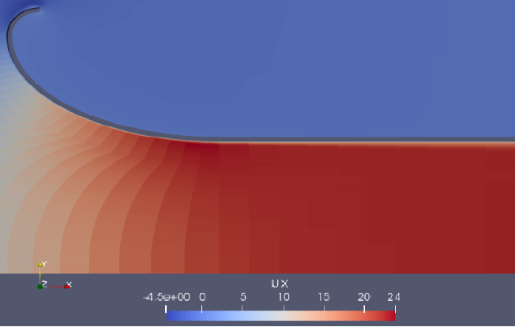
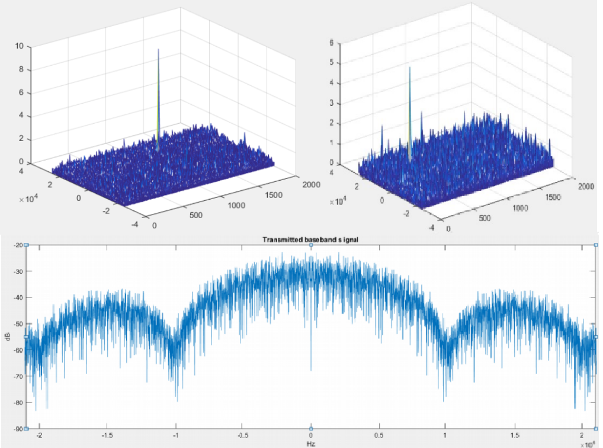
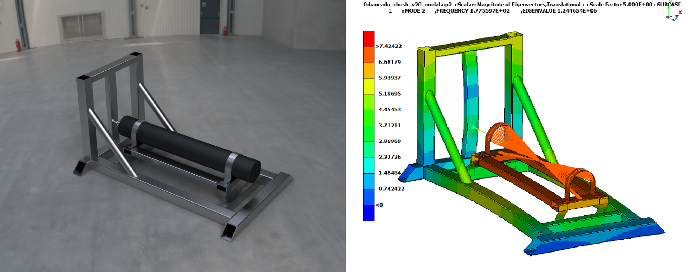
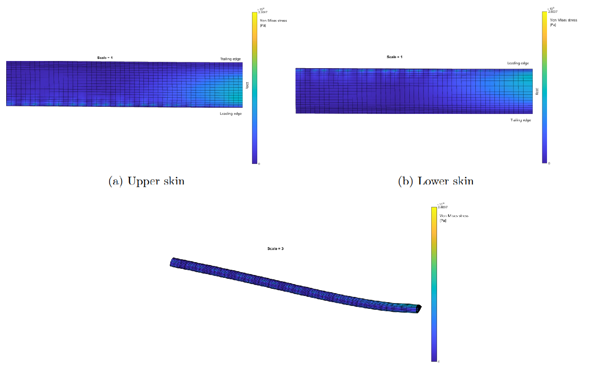
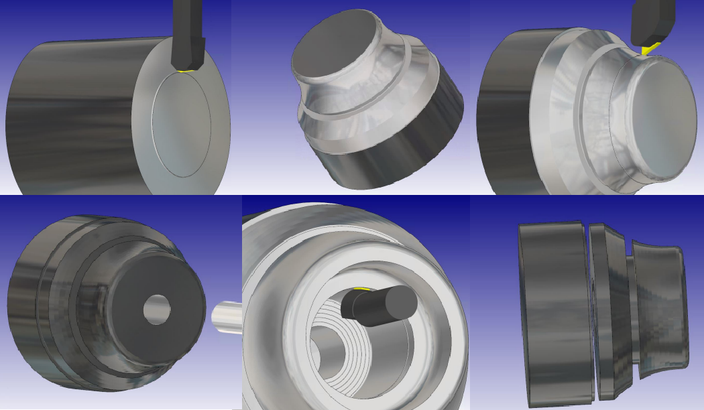

Diseño de entrada de aire para un turbojet
En este proyecto se propone el diseño de una entrada de aire y el sistema de medida de flujo de aire correspondiente para un turbojet a escala.
Se utilizan herramientas como OpenFoam, una libreria en C++ para realizar las simulaciones y ParaView para el posprocesado.
Ver proyecto

Adquisición de señales y front end GNSS
Sesiones de laboratorio realizadas para adquirir, simular y analizar señales GPS L1 CA y satélites de la constelación Galileo utilizando Matlab

Banca de pruebas de motor
Diseño de una banca de pruebas para un cohete sonda bajo requerimientos especificos utilizando ANSA, Nastran y META para el análisis estructural FEA

Modelo estructural de ala
Se considera un perfil alar NACA0018 como prototipo bajo cargas aerodinámicas para analizar su comportamiento estructural utilizando Matlab

Mecanizado de pieza por CAM
Mecanizado de pieza tornada por el software CAM, HyperMill utilizando un torno CNC.